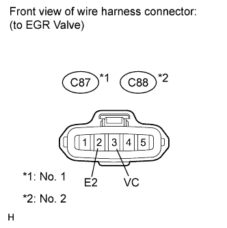
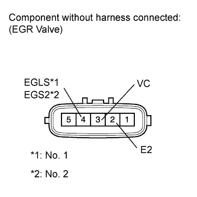
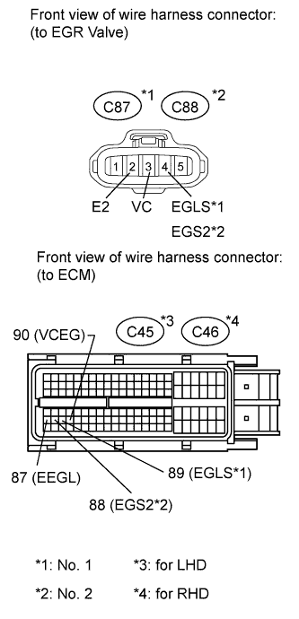

DTC P0405 Exhaust Gas Recirculation Sensor "A" Circuit Low |
DTC P0406 Exhaust Gas Recirculation Sensor "A" Circuit High |
DTC P0407 Exhaust Gas Recirculation Sensor "B" Circuit Low |
DTC P0408 Exhaust Gas Recirculation Sensor "B" Circuit High |
| DTC Detection Drive Pattern | DTC Detection Condition | Trouble Area |
| Engine switch on (IG) for 5 seconds | No. 1 EGR valve position sensor output voltage is less than 0.1 V for 5 seconds (1 trip detection logic). |
|
| DTC Detection Drive Pattern | DTC Detection Condition | Trouble Area |
| Engine switch on (IG) for 5 seconds | No. 1 EGR valve position sensor output voltage is more than 4.9 V for 5 seconds (1 trip detection logic). |
|
| DTC Detection Drive Pattern | DTC Detection Condition | Trouble Area |
| Engine switch on (IG) for 5 seconds | No. 2 EGR valve position sensor output voltage is less than 0.1 V for 5 seconds (1 trip detection logic). |
|
| DTC Detection Drive Pattern | DTC Detection Condition | Trouble Area |
| Engine switch on (IG) for 5 seconds | No. 2 EGR valve position sensor output voltage is more than 4.9 V for 5 seconds (1 trip detection logic). |
|
| 1.CHECK HARNESS AND CONNECTOR (POWER SOURCE) |
 |
Disconnect the EGR valve connector.
Measure the voltage according to the value(s) in the table below.
| Tester Connection | Switch Condition | Specified Condition |
| C87-3 (VC) - C87-2 (E2) | Engine switch on (IG) | 4.5 to 5.5 V |
| Tester Connection | Switch Condition | Specified Condition |
| C88-3 (VC) - C88-2 (E2) | Engine switch on (IG) | 4.5 to 5.5 V |
|
| ||||
| OK | |
| 2.INSPECT EGR VALVE ASSEMBLY (No. 1 or No. 2) (POSITION SENSOR) |
 |
Disconnect the EGR valve connector.
Measure the resistance according to the value(s) in the table below.
| Tester Connection | Condition | Specified Condition |
| 3 (VC) - 2 (E2) | 20°C (68°F) | 2.45 to 4.55 kΩ |
| 4 (EGLS) - 2 (E2) | 20°C (68°F) | 2.45 to 4.55 kΩ |
| Tester Connection | Condition | Specified Condition |
| 3 (VC) - 2 (E2) | 20°C (68°F) | 2.45 to 4.55 kΩ |
| 4 (EGS2) - 2 (E2) | 20°C (68°F) | 2.45 to 4.55 kΩ |
|
| ||||
| OK | |
| 3.CHECK HARNESS AND CONNECTOR (EGR VALVE POSITION SENSOR - ECM) |
 |
Disconnect the EGR valve connector.
Disconnect the ECM connector.
Measure the resistance according to the value(s) in the table below.
| Tester Connection | Condition | Specified Condition |
| C87-3 (VC) - C45-90 (VCEG) | Always | Below 1 Ω |
| C87-4 (EGLS) - C45-89 (EGLS) | Always | Below 1 Ω |
| C87-2 (E2) - C45-87 (EEGL) | Always | Below 1 Ω |
| Tester Connection | Condition | Specified Condition |
| C88-3 (VC) - C45-90 (VCEG) | Always | Below 1 Ω |
| C88-4 (EGS2) - C45-88 (EGS2) | Always | Below 1 Ω |
| C88-2 (E2) - C45-87 (EEGL) | Always | Below 1 Ω |
| Tester Connection | Condition | Specified Condition |
| C87-3 (VC) - C46-90 (VCEG) | Always | Below 1 Ω |
| C87-4 (EGLS) - C46-89 (EGLS) | Always | Below 1 Ω |
| C87-2 (E2) - C46-87 (EEGL) | Always | Below 1 Ω |
| Tester Connection | Condition | Specified Condition |
| C88-3 (VC) - C46-90 (VCEG) | Always | Below 1 Ω |
| C88-4 (EGS2) - C46-88 (EGS2) | Always | Below 1 Ω |
| C88-2 (E2) - C46-87 (EEGL) | Always | Below 1 Ω |
| Tester Connection | Condition | Specified Condition |
| C87-3 (VC) or C45-90 (VCEG) - Body ground | Always | 10 kΩ or higher |
| C87-4 (EGLS) or C45-89 (RGLS) - Body ground | Always | 10 kΩ or higher |
| Tester Connection | Condition | Specified Condition |
| C88-3 (VC) or C45-90 (VCEG) - Body ground | Always | 10 kΩ or higher |
| C88-4 (EGS2) or C45-88 (EGS2) - Body ground | Always | 10 kΩ or higher |
| Tester Connection | Condition | Specified Condition |
| C87-3 (VC) or C46-90 (VCEG) - Body ground | Always | 10 kΩ or higher |
| C87-4 (EGLS) or C46-89 (EGLS) - Body ground | Always | 10 kΩ or higher |
| Tester Connection | Condition | Specified Condition |
| C88-3 (VC) or C46-90 (VCEG) - Body ground | Always | 10 kΩ or higher |
| C88-4 (EGS2) or C46-88 (EGS2) - Body ground | Always | 10 kΩ or higher |
|
| ||||
| OK | |
| 4.REPLACE ECM |
Replace the ECM (Click here).
|
| ||||
| 5.REPLACE EGR VALVE ASSEMBLY (No. 1 or No. 2) |
Replace the EGR valve assembly (No. 1 or No. 2) (Click here).
|
| ||||
| 6.REPAIR OR REPLACE HARNESS OR CONNECTOR |
| NEXT | |
| 7.CONFIRM WHETHER MALFUNCTION HAS BEEN SUCCESSFULLY REPAIRED |
Connect the intelligent tester to the DLC3.
Clear the DTCs (Click here).
Turn the engine switch off.
Turn the engine switch on (IG) for 5 seconds.
Enter the following menus: Powertrain / Engine / DTC.
Confirm that the DTC is not output again.
| NEXT | ||
| ||